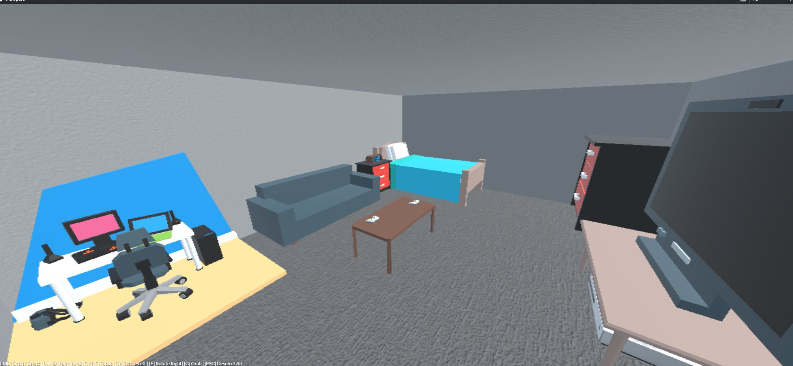
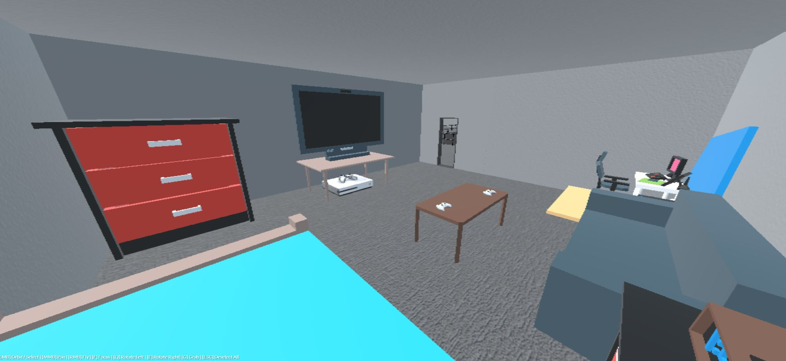
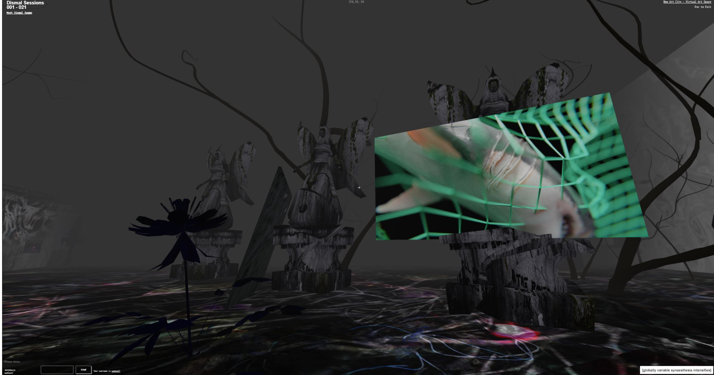
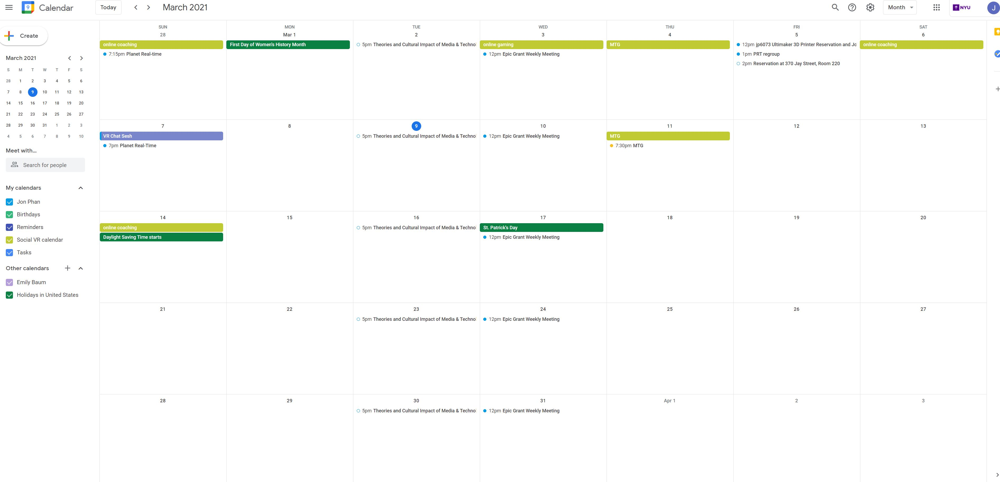
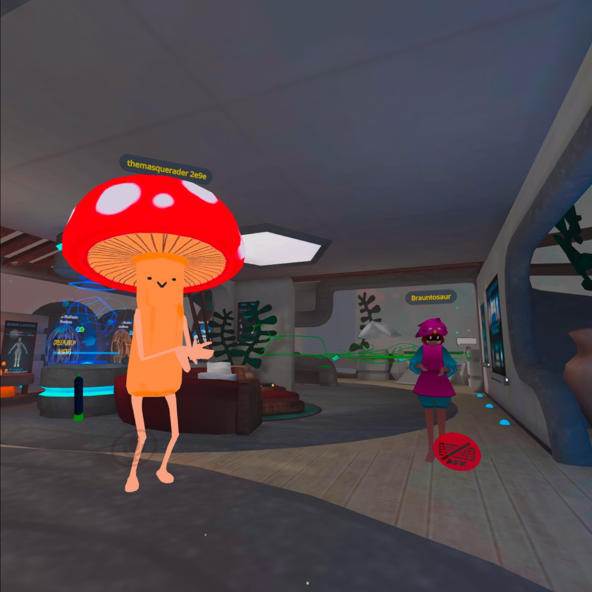
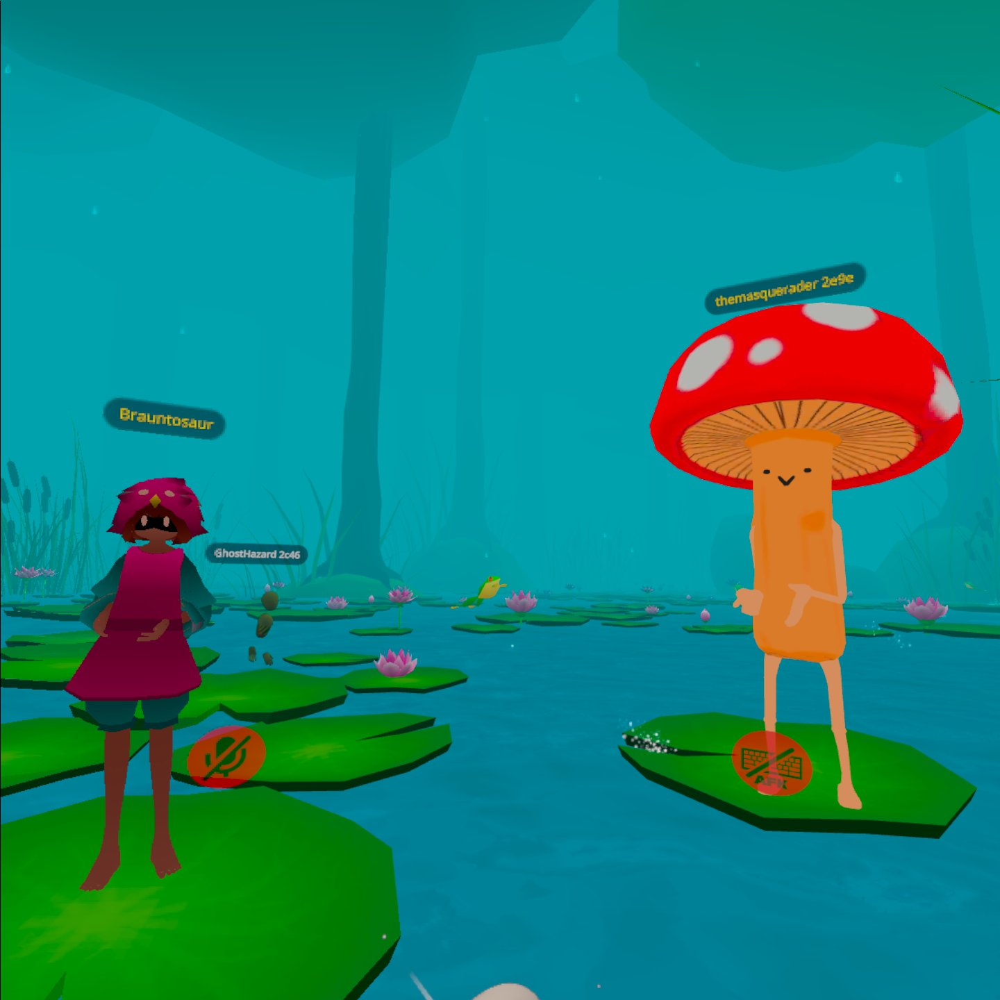

Week 5 Placemaking
Placemaking my space
For my Placemaking, I decided to add to my level from last week since it’s set up nicely as a base to add additional rooms. I was thinking about my most familiar spaces and what would look nice in a single room that can be found on this level. I decided it would be really nice to re-create my old room from highschool at my parent’s house. It’s nothing too complicated, the main components would be the bed where I slept, dressers for my clothes, my TV where I played movies and video games, and my computer where I spent most of my time.  I actually rearranged my room a lot growing up and this was the final layout before moving out to college and then my own apartments. Thinking back about my old room gives me a ton of nostalgic feelings and makes me miss the good ole days where I got to just hang out with my friends in there and play video games all day. It would actually be pretty interesting to fill a bunch of these rooms with past places from my memories. Wade Wallerstein
I thought that Wade was a super informative speaker this week. Maybe a little too informative haha, there were so many deep topics that he really blazed through. I don't really have any real knowledge about anthropology but the idea of exploring digital anthropology was really interesting, I didn't know how complicated it could be and how many branching ideas could come stem from it.  I really enjoyed the social VR portion of the session when he took us through some of his spaces. It really felt like when a speaker breaks out of just being a flat 2D webcam video feed and becomes an avatar that can guide you through a world they built for you, the interaction really pushes the experience of getting spoken to is elevated. I think my favorite of the worlds he showed us was the Dismal Swamp. It perfectly encompassed the creepy spooky vibe he was going for and the fact that you could explore and find new things or get lost because of the vision FX really sold it.Social Calendar
https://calendar.google.com/calendar/u/0?cid=Y19zaTByZzljczU2YjNrZzV0N3M3NGYydWc5Z0Bncm91cC5jYWxlbmRhci5nb29nbGUuY29t  For my online socializing this week, I did the usual things such as helping my buddies lose weight with my online coaching, they've lost a solid 10lbs in the last 8 weeks so I'm pretty happy about that. I also did my usual gaming with my hometown friend, we played the usual Call of Duty that day. I met with my Epic grant team and we worked and talked about the Planet Real-Time show that's actually airing for the first episode this Tues at 7. Playing Magic on webcam has also been something I've been looking forward to a lot each week too, it's always fun to try and show off your new brewed decks.  The new thing I did this week was trying out VR Chat with some of our classmates. Dan and Sounak were able to make it into the session. One of the things we all agreed on was the UI was pretty terrible. I think we might take good UI/UX design for granted sometimes, even though the three of us leaned on the side of techier, it still took us a chunk of time to get all together. We hung out a bit in the private lobby room I had after I invited them and eventually went to a lily pad world where we could shoot our tounges out a few feet to catch dragonflies. This room was also filled with children I would guess to be around the age of 8 based on their hi pitched voices and hyperactive behavior. The ability to hear people based on distance was pretty cool to use for the first time, we went off into our own corner to avoid the children and learn how to catch dragonflies. The biggest issue I had with VRchat was that the movement was like a normal first-person game, but in VR the feeling of movement while sitting or standing still induced some crazy vertigo. I think I was only on for about half an hour before I had to put down the headset and lay down. I now understand the reason why we teleport in VR rather than move. home
while (!deck.isInOrder()) {
print 'Iteration ' + i;
deck.shuffle();
i++;
}
print 'It took ' + i + ' iterations to sort the deck.';